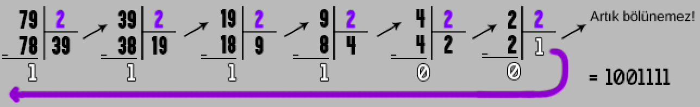
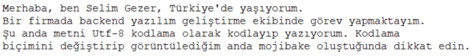
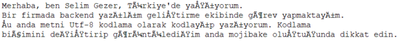
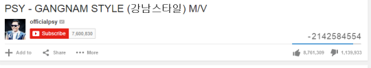
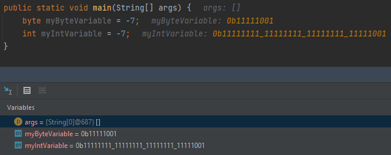
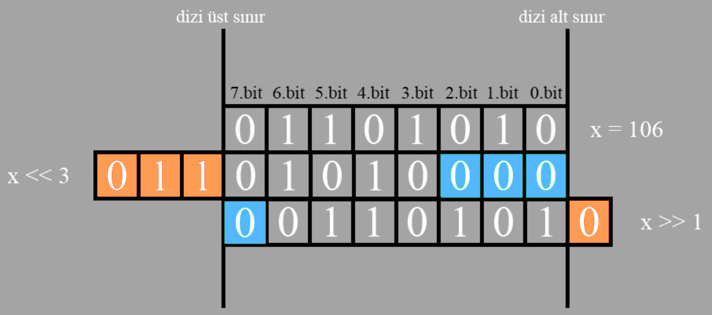
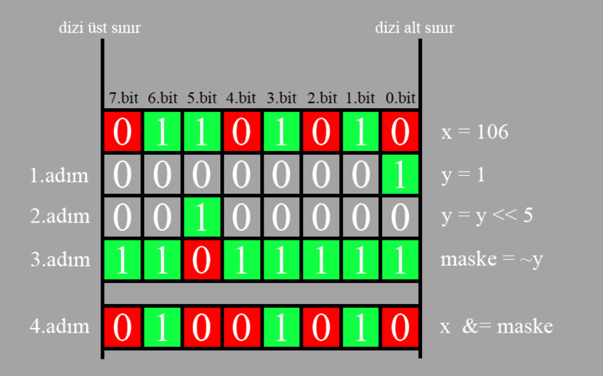
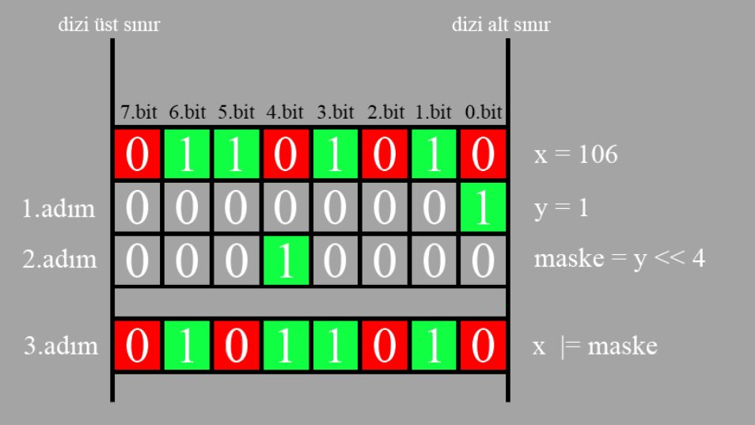
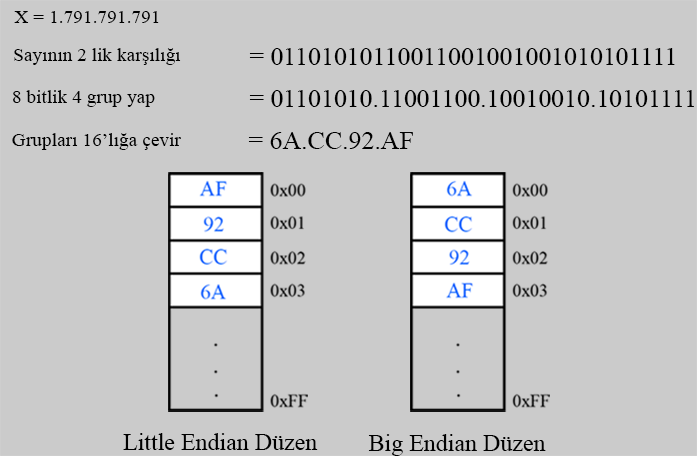

Bit - Byte Kavramları
Sayı Sistemleri
Günlük hayatımızda sayıları 10’luk biçimde ifade ederiz ve 10’luk sistemde sayıları ifade edebilmek için 10 simgemiz bulunur. Bunlar {0,1,2,3,4,5,6,7,8,9} şeklindedir. Bir örnek üzerinden gidecek olursakta 3 haneli(basamaklı) bir sayı yazacağımızı düşünün. Bu sayının her hanesi bu 10 sembolden birisini alma şansına sahip olabilir. 2’lik biçimdeki gösterimde ise aynı mantıkla düşünürsek gösterim için 2 sembolu bulunur. Bunlar {0,1} şeklindedir. Ve yine 3 haneli bir sayı yazdığımızda her hane bu sefer 2 sembolden birini alabilme şansına sahip olacaktır.
Basamak Kavramı
10’luk sistemdeki hanelerimiz diğer bir adıyla basamaklarımız şu şekilde adlandırılır.
Örneğin 1234 sayısının basamaklarına bakarsak. Sağdan sola şeklinde ilerler ve her basamak aslında 10’un bir sonraki kuvveti olacak şekilde büyür.
| 1 | 2 | 3 | 4 |
|---|---|---|---|
| Binler | Yüzler | Onlar | Birler |
| 10^3 | 10^2 | 10^1 | 10^0 |
Buradan da sayıyı çözümlediğimizde aslında 10’nun belirli kuvvetlerinde toplam gerçekleştirdiğimizi görürüz. Herhalde neden 10’luk sistem dendiği daha açık olmuştur. :)
1234 = 1 tane 1000 (10^3) + 2 tane 100(10^2) + 3 tane 10(10^1) + 4 tane 1(10^0)
Şimdi aynısını 2’lik sistemdeki 4 haneli 1010 sayıyı için düşündüğümüzde yine sağdan sola şekilde ama bu sefer bir fark var basamaklar 2’nin kuvvetleri şeklinde büyüyürek ilerler.
| 1 | 0 | 1 | 0 |
|---|---|---|---|
| Sekizler | Dörtler | İkiler | Birler |
| 2^3 | 2^2 | 2^1 | 2^0 |
2’lik sistemdeki her basamağa bit denir.
Bakış Açısı ve Okunuş
_ _ _ = 3 haneli(basamaklı) sayı
10’luk sistem bakış açısı :
En büyük 3 haneli sayıyı yazalım dersek ne yaparız hemen elimizde 10’luk sistem sembollerinden en büyüğünü yan yana getirir söyleriz ki bu durumda bu sayı 9 9 9 dan 999 olur. Ve bunu okurken basamaklarından faydalarınız. “Dokuz yüz doksan dokuz” şeklinde okuruz.
2’lik sistem bakış açısı :
En büyük 3 haneli sayıyı yazalım dediğimiz noktada 2’lik sistem sembollerinden en büyüğünü yan yana getirip söylersek bu durumda 1 1 1 den 111 sonucunu elde ederiz. Ama bunu 10’luk sistemdeki “Yüz on bir şeklinde okumayız !”. Direk hane hane yani “Bir bir bir” şeklinde okuruz.
Dönüşüm
Biçimler arasında dönüşüm yapmak mümkündür. Bu noktada 10’luktan 2’liğe veya tam tersi 2’likten 10’luğa geçişler ihtiyaca göre yapılabilir. Az önce 2’lik sistem bakış açısında elde ettiğimiz 111 sayısının 10’luğa çevirmek isteğimizde direk basamaklarını 2’nin kuvvetleri şeklinde çözümlersek 10’luk sonucunu elde edebiliriz.
111 = 1*2^2 + 1*2^1 + 1*2^0 şeklinde toplarsak 7 yapar bu demek oluyor ki 2’lik 111 ifadesi 10’luk 7 sayısına denk geliyor.
Peki 10’luktan 2’liğe nasıl döneriz ? Burada farklı teknikler mümkün olmakla beraber genelde en bilineni olan bölme tekniği ile 2’lik değerini bulabiliriz. Aşağıdaki resimde 79 sayısının 2’lik karşılığının nasıl bulunduğunu gözlemleyelim. Sayıyı 2’ye bölemeyinceye kadar 2’ye bölüyoruz. Bölemediğimiz noktadaki bölenden başlayıp tüm kalanları yanına eklemeye başlıyoruz. Resimdeki mor okun yönüne dikkat edin. Sonuç olarak 79 sayısı 2’lik olarak 1001111 ile temsil edildiğini buluyoruz. Tabi bilgisayarlı sistemlerde en düşük 8 bit kullanıyoruz demiştik. O yüzden sayımızı 8 bit bir şekle getirmek için sol baştan 0 ekleyebiliriz. 79 sayısıda 2’lik olarak 7 bit ile temsil edildiğinden 8 bite tamamlamak için 1 tane 0 eklememiz yeterli olacaktır. Nihai sonucumuz 01001111 şeklindedir.

Peki bilgisayarlar neden 10’luk yerine 2’lik sistem kullanıyor ?
- Bunun aslında temel sebebi gün sonunda aslında her şeyin elektrik sinyalleri olması ve bu sinyaller genellikle 2 farklı durum göstermesi.
- Elektik var (HIGH) veya Elektrik yok (LOW)
- Diğer bir sebep basitlik denebilir 10 luk sistem olsaydı 10 farklı durumla baş etmek gerekirken 2’likte sadece 2 farklı durumla baş etmenin gerekmesi.
- Bilgisayar içerisindeki hesapların belirli mantıksal işlemler gerektirmesi ve bunun da aslında boole cebrine dayanması ve boole cebrininde 0 ve 1 ler üzerine kurulu olması. Yani aslında 2’lik sisteme paralellik göstermesi.
Her ne kadar 2’lik sistem ve bit lerden bahsetsekte tekil halde bir bit bilgisayar için direk bir anlam ifade etmemektedir. Onun yerine bit gruplarının bir araya gelerek oluşturduğu byte kavramı kullanılmaktadır. Ve 1 byte 8 bit e tekabül etmektedir.
Bit - Byte ilişkisini aşağıdaki tabloyu inceleyerek gözlemleyebiliriz.
| Birim Adı | Kısaltma | Büyüklük (bit cinsinden) | Açıklama |
|---|---|---|---|
| Bit | b | 1 bit | En küçük veri birimi |
| Byte | B | 8 bit | 1 byte = 8 bit |
| Kilobyte | KB | 8,192 bit | 1 KB = 1,024 byte |
| Megabyte | MB | 8,388,608 bit | 1 MB = 1,024 KB |
| Gigabyte | GB | 8,589,934,592 bit | 1 GB = 1,024 MB |
| Terabyte | TB | 8,796,093,022,208 bit | 1 TB = 1,024 GB |
| Petabyte | PB | 9,007,199,254,740,992 bit | 1 PB = 1,024 TB |
Sayı sistemlerini ifade ederken programlamada kullanılan ön ekler ve son ekler nelerdir ?
Sayıların hangi sistemde ifade edildiğini anlamak için bazı ön ekler ve son ekler kullanılabilir.
Ön ekler :
- 10’luk için 0d bazı diller için desteklenir. Ama genellikle bir ek kullanılmaz.
- 2’lik için 0b
- 16’lık için 0x
Yani 10’luk sistemde 33 sayısı demekle 0d33 aynı şeyi ifade eder. Yine 2’lik sistemde 1101 demekle direk 0b1101 şeklinde yazmak arasında bir fark bulunmamaktadır. Bazı dökümanlar veya kaynaklarda görürseniz şaşırmayın!
Son ekler :
- 2’lik için b
- 16’lık için h
Yani 16’lık sistemdeki FF ile FFh aynı anlama gelmektedir. Yine 2’lik 1010 ile 1010b yine aynı anlama gelmektedir.
16’lık gösterim nedir ve neden gereklidir ?
İkilik sistemin doğrudan bilgisayar için çok uygun olduğunu yukarıdaki anlatımlar sonrası farketmiş olabiliriz. Ama 2’lik sistemi insanlar için okumak ve yazmak zor ve uzun olabilir. O nedenle daha rahat hareket etmek için 16’lık sistemden yararlanılmaktadır. Yine yukarıdaki mantıkla 16’lık sistemde 16 sembolümüz olduğunu düşünebiliriz. Kesinlikle doğru düşündünüz ama ufak bir fark olacak.
Sembollerimiz : {0,1,2,3,4,5,6,7,8,9,10,11,12,13,14,15} şeklindedir. Fakat bu noktada ufak bir hareket yapılıp 2 haneli semboller tek haneli ifade edilebilmek için karakterlerden yararlanılır.
Yani sembollerimizi güncellersek : {0,1,2,3,4,5,6,7,8,9,A,B,C,D,E,F} halini almış olur.
2’likten 16’lığa da dönüşüm mümkündür. Bunun için bitler 4’lü gruplara ayrılır. (Neden 4’lü grup demeden hemen cevaplayalım. Çünkü 16’lıkta 16 sembolüm bulunduğu için bit seviyesinde düşünürsek bunları 4 bitle temsil edebilirim) Sonrasında her 4’lünün kendi içerisinde 16’lık karşılığı hesaplanır ve en son hesaplanan bu değerler birleştirilir.
Örneğin : 0b10100001 ifadesinin 16’lık karşılığı nedir ?
10100001 ifademizi 4’lü gruplara ayıralım. 1010 0001 . Şimdi her grubu kendi içinde 16’lık sisteme göre hesaplarsak 1010 = 10’a denk gelir ve 16’lıkta bu A karakteridir. 0001 = 1’e denk gelir. Sonuçlar birleştirilir.
0xA1 sonucu elde edilmiş olur.
| 10’luk | 2’lik | 16’lık |
|---|---|---|
| 0d161 | 0b10100001 | 0xA1 |
Sayıların sistemler arasındaki geçişini aşağıda gözlemleyelim.
| 10’luk | 2’lik | 16’lık |
|---|---|---|
| 0 | 00000000 | 00000000 |
| 1 | 00000001 | 00000001 |
| 2 | 00000010 | 00000010 |
| 3 | 00000011 | 00000011 |
| 4 | 00000100 | 00000100 |
| 5 | 00000101 | 00000101 |
| 6 | 00000110 | 00000110 |
| 7 | 00000111 | 00000111 |
| 8 | 00001000 | 00001000 |
| 9 | 00001001 | 00001001 |
| 10 | 00001010 | A |
| 11 | 00001011 | B |
| 12 | 00001100 | C |
| 13 | 00001101 | D |
| 14 | 00001110 | E |
| 15 | 00001111 | F |
| 31 | 00011111 | 1F |
| 186 | 10111010 | BA |
| 255 | 11111111 | FF |
Sayılar büyüdükçe 2’liklerin ne kadar okunurluğunu yitirdiğini fark edebiliriz. Ve yine bu noktada 16’lığın nispeten daha rahat takip etmemize yardımcı olduğunu görebiliriz.
Bit Representation (Temsili)
Tam Sayılar Bellekte Nasıl Temsil Edilir ?
Tam sayı türleri programlamada bir sayının virgülsüz halini temsil etmek için kullanılmaktadır. Buradan hareketle az biraz bile programlama dillerinde gezindiysek tam sayıları ifade etmek için farklı şekillerde türler olduğu gözlemleyebiliriz. Bu türler genellikle bellekte kapladıkları alana, işaretli (signed) ya da işaretsiz (unsigned) olup olmamalarına göre ayrılırlar. Unsigned ve signed detaylarını yazının ilerleyen kısmındaki bit manipulasyonu başlığı altında detaylı inceleyeceğiz.
Aşağıda bahsedilen terimlerin açıklamalarını içeren tabloyu inceleyebilirsiniz.
| Terim | Açıklama |
|---|---|
| Signed (işaretli) | Negatif veya pozitif sayılar içerebilir (örn. -10, 0, 42). |
| Unsigned (işaretsiz) | Sadece pozitif sayılar içerebilir (örn. 0, 100). |
| bit | Bellekte ne kadar yer kapladığını belirtir (8-bit = 1 byte). |
Burada ufak bir programlama tarafından göz gezdirecek olursak C tarafında tam sayıları temsil etmek için short, unsigned short, int, unsigned int, long gibi türler bulunmakta iken Java tarafında byte, short, int, long gibi sadece signed türler bulunmaktadır. Unsigned için direk özelleşmiş bir tür bulunmamaktadır. Bu nedenle bit seviyesinde işlem yaparken kullandığınız programlama dili, platform ve derleyici özelliklerine bakmakta fayda olacağını söyleyebiliriz. Diğer türlü sabit kabullerle hareket edilirse yanlış sonuçlarında elde edilebilme şansı olacaktır.
Tabi akıllara burada şu soruda gelebilir. Bir tam sayıyı temsil etmek için neden bu kadar farklı tür mevcut ? Bunun içinde şöyle cevap vermek mümkün aslında sonuçta bu değerler gün sonunda bellekte yer kaplayacaklar ve bu bellek alanımızın bir boyutu var (2gb, 8gb vb.) dolayısıyla bu alanı verimli kullanmak bir sebep olmakla beraber, işlemcinin belirli tiplerde daha iyi performans göstermesi ve serileştirme süreçlerinide buna dahil edebiliriz. Aşağıda Java da türlerin kapladıkları bellek alanı ve değer aralıkları görülebilir. Yine istersek diğer diller içinde örneğin c için “c data types” şeklinde aramalar yaparak türler için belirtilmiş boyutlara erişilebilir.
| Tür | Bellek | Değer Aralığı |
|---|---|---|
| byte | 1 byte | [-128 , 127] |
| short | 2 byte | [-32,768 , 32,767] |
| int | 3 byte | [-2,147,483,648 , 2,147,483,647] |
| long | 4 byte | [-9,223,372,036,854,775,808 , 9,223,372,036,854,775,807] |
Ondalıklı Sayılar Bellekte Nasıl Temsil Edilir ?
Ondalıklı sayılar bilgisayarda IEEE 754 standartına göre temsil edilirler. Burada sayılar genellikle 32 bit tek hassasiyetli ve 64 bit çift hassasiyetli olarak ele alınırlar.
Bu stadartta sayılar 3 bölümde incelenir.
- Sign bit : Sayının pozitif negatifliğini saklar.
- Exponent : Sayının büyüklüğünü saklar.
- Mantissa : Sayının kesirli kısmını saklar.
32 ve 64 bit için ilgili kısımlar için kullandığı bit sayıları aşağıdaki şekildedir.
32-bit (float):
- 1 bit işaret (sign bit)
- 8 bit üstel kısım (exponent)
- 23 bit mantissa (fraction)
64-bit (double):
- 1 bit işaret (sign bit)
- 11 bit üstel kısım (exponent)
- 52 bit mantissa (fraction)
Programlama diline göre değişebilmekle birlikte genellikle 32 bit için float, 64 bit için double türlerinden yararlanılır. Yukarıda belirttiğim 3 kısmın detayları, normalization işlemi ve hesaplama yaklaşımları ile ilgili merakınız bulunuyor ise standardı okumanızı tavsiye ederim.
String İfadeler Bellekte Nasıl Temsil Edilir ?
Bilgisayarda her şeyin 0 ve 1’lerden oluştuğunu söylemiştik o nedenle bir string ifade de aslında gün sonunda bilgisayar için 0 ve 1’lerden oluşan bir sayıdan başka bir şey olmayacaktır. Tabi bu noktada bir kelimenin aslında harflerden oluştuğunu fark etmek gerekirki aslında hedefimizin ise bir karakteri veya harfi bilgisayarda temsil etmek için bir mantık oluşturabilmek olacaktır. Aynı mantıkla bilgisayarlı sistemlerin ilk günlerinden bugüne bu karakterleri temsil etmek için farklı standartlar oluşturulmuştur.
Burada 2 terime dikkatinizi çekmek istiyorum.
- Karakter seti (Character Set)
- Kodlama (Encoding)
Karakter Seti Nedir ? Karakter seti, bir dilde veya sistemde kullanılabilecek tüm karakterlerin bir koleksiyonudur. Yani, hangi karakterlerin mevcut olduğunu belirler. Özetle aslında karakter seti içerisinde hangi karakterler ve sembolleri temsil edebildiğini temsil eden dökümanlardır diyebiliriz.
Kodlama Nedir ? Encoding veya kodlama, bir karakterlerin sayısal değerlere dönüştürülmesidir. Yani, her bir karakterin bellekte veya bir dosyada nasıl temsil edileceği ile ilgilidir. Bu temsil, karakterlerin sayısal (genellikle binary) bir formatta saklanmasını sağlar.
Karakter setlerinden birkaçını inceleyecek olursak;
- ASCII (US-ASCII) karakter seti : Bilgiyarlı sistemlerin ilk günlerinde 2 bilgisayar arasında metin alışverişini standartize etmek amacıyla ASCII geliştirilmiştir. ASCII sistemi 7 bit temelinde karakter kümesini oturtmuştur. Dolayısıyla 7 bit ile encode edildiğinden 128 farklı karakter temsil edebilme şansı yakalamıştır. Fakat bu bir yere kadar yeterli gelirken bilgiyarlı sistemler hayatımıza girdikçe farklı ülkelerdeki insanlarında birbirleriyle iletişim kurduğu dünyada bu 128 karakter yetersiz hale gelmiştir. Çünkü diğer dillerde farklı karakterler mevcut ve artık 7 bit sınırları içinde bu yeni karakterleri ekleyecek bir sayı kalmamıştır. Bu karakter seti içerisinde türkçe karakterlerde bulunmamaktadır. (ş,ç,ğ,ü,ı içermez.)
- ASCII Extended (ISO 8859-1) karakter seti : ASCII’ nin yeni karakterler eklemekteki sıkıntılarını gidermek için 8 bit temelinde karakter setini oluşturmuştur. Bu da bu karakter setinde 256 karakter temsil şansı oluşturmuştur. İlk 128 karakteri direk standart ASCII dekileri baz almakla birlikte geriye 128 karakter temsil edilecek yeni alanlar oluşmuştur. Daha çok avrupa dillerine özgü karakterlere odaklanır. Burada bazı türkçe karakterler kendine yer bulmuştur fakat hala hepsini içermemektedir. (ı,ğ,İ içermez.)
Süreç içerisinde yukarıda bahsettiklerimden farklı standartlarda oluşmuştur fakat şunu faketmeliyiz. 7 bit veya 8 bit ile encode edilsin sınırlarımızın mevcut olduğunu görmeliyiz. Max 256 karakter temsil edebiliyoruz. Ama düşününki Çin de kullanılan kanji karakterlerini sayısı bile 50 binleri bulmaktadır. Ve bunları bir byte gibi büyüklükte ifade etme şansımız olmayacaktır. O nedenle dünya üzerinde tüm karakterkeri kapsayan bir evrensel bir stadart üzerinde çalışılmış ve UNICODE standardı/karakter seti oluşturulmuştur. Bu standartın bilgisayarda temsil edebilmesi için UTF- şeklinde encode yapıları bulunmaktadır.
Unicode Aralıkları
Unicode karakter seti, farklı dil ve sembol gruplarını sınıflandırmak için bloklar kullanır. Her blok, belirli bir yazı sistemini veya sembol grubunu içerir.
- Latin harfleri (U+0000–U+007F)
- Yunanca (U+0370–U+03FF)
- Çin karakterleri (Han ideogramları) (U+4E00–U+9FFF)
- Matematiksel semboller (U+2200–U+22FF)
- Emoji (U+1F600–U+1F64F)
UTF varyantları ve anlamları
- UTF-8 : Değişken uzunluktaki kodlamadır ve ASCII ile uyumludur. En yaygın kullanılan Unicode kodlama biçimidir. Karakterin durumuna göre 1 ila 4 byte arasında encode edilir.
- UTF-16 : Her karakteri 2 veya 4 baytla kodlar. Genellikle Batı dillerinde 2 bayt, diğer dillerde ise 4 bayt kullanılır.
- UTF-32 : Her karakteri 4 baytla kodlar. Bu, tüm karakterlere sabit uzunluk sağlar, ancak verimli değildir.
Sonuç olarak baktığımızda Unicode, modern dijital dünyamızda metinleri standardize etmek için temel bir rol oynar ve dünya çapında 1 milyondan fazla karakteri destekler. Bu sayede, farklı dillerde yazılmış metinler, semboller ve özel karakterler arasında uyumsuzluk problemini ortadan kaldırmış olur.
Bu kodlama biçimleri (UTF-) bellekteki temsildir. Ekranda karakter çizimleri söz konusu olduğunda bitmap (pixel matrisi) veya vector (harflerin sınırları ve eğrilerini tanımlayan matematiksel veriler) grafiklerden yararlanılmaktadır. Günümüzde bu işlemler genellikle font dosyaları (OpenType, TrueType) ile gerçekleştirilmektedir.
Mojibake Nedir?
Metinlerin yanlış karakterlerle, bozulmuş ve okunamaz şekilde görüntülenmesine verilen isimdir. Genellikle uyumsuz karakter kodlamasından kaynaklanır. Örnek vermek gerekirse UTF-8 ile kodlanmış bir metni Latin-1 gibi farklı bir karakter setiyle okunmaya çalışılırsa görünteleyemediği karakterler soru işareti veya farklı karakterler olarak görüntülenir. Şunu da belirtmekte fayda var, bu bir dönüştürme işlemi değildir. Yani herhangi bir veri kaybı oluşmaz sadece yanlış gösteriliyordur! Resmi inceleyelim.
Utf-8 kodlama ile yazdığım metin.

Aynı metni farklı bir kodlama biçimi ile görüntülemeye çalıştığımızda mojibake oluşmaktadır.

Bit Manipulation (Manipülasyonu)
Öncelikle bit manipulasyonuna geçmeden önce bilgisayarın 2’lik sistem üzerine kurulu olma sebeplerinden biriside boole cebri demiştik. Manipulasyonu anlayıp uygulayabilmemiz için bu cebri bilmemiz gerekir. Zaten sizlerde buralara kadar okumalar yapıyorsanız bu konuları çoktan biliyorsunuz demektir. Yine de hatırlatmak amacıyla bu cebrin kullanımıyla oluşturulan mantık kapılarını ve bu kapılar içerisinde yapabileceğimiz işlemler ve ulaşacağımız sonuçları inceleyelim.
Ve(And) Kapısı : 2 veya daha fazla giriş üzerinde mantıksal işlemler yapılabilen mantık kapısıdır. Girişlerin tümü doğru olduğunda çıkış doğru olmakla diğer tüm durumlarda çıkış yanlıştır. & (ampersand) işareti ile ifade edilir. Çarpma işlemi gibi davranır.
| a | b | a&b = a*b gibidir |
|---|---|---|
| 0 | 0 | 0 |
| 0 | 1 | 0 |
| 1 | 0 | 0 |
| 1 | 1 | 1 |
Veya(Or) Kapısı : 2 veya daha fazla giriş üzerinde mantıksal işlemler yapılabilen mantık kapısıdır. Girişlerden herhangi biri doğru olduğunda çıkış doğru olmakla diğer tüm durumlarda çıkış yanlıştır. | (pipe) işareti ile ifade edilir. Toplama işlemi gibi davranır.
| a | b | a|b = a+b gibidir |
|---|---|---|
| 0 | 0 | 0 |
| 0 | 1 | 1 |
| 1 | 0 | 1 |
| 1 | 1 | 1 |
Özel Veya(Xor) Kapısı : 2 veya daha fazla giriş üzerinde mantıksal işlemler yapılabilen mantık kapısıdır. Girişlerden yalnızca biri doğru olduğunda çıkış doğru olmakla diğer tüm durumlarda çıkış yanlıştır. ^ (caret) işareti ile ifade edilir.
| a | b | a^b |
|---|---|---|
| 0 | 0 | 0 |
| 0 | 1 | 1 |
| 1 | 0 | 1 |
| 1 | 1 | 0 |
Değil(Not) Kapısı : Tek giriş üzerinde mantıksal işlemler yapılabilen mantık kapısıdır. Verilen girişin tersini çıkışa verir. ~ (tilda) işareti ile ifade edilir.
| a | ~a |
|---|---|
| 0 | 1 |
| 1 | 0 |
Yukarıdaki kapılar kullanılarak farklı kapılarda elde edilebilir. Bunlar NAND, NOR, XNOR şeklindedir.
Bu genel bilgiler sonrası şimdi gelelim artık manipulasyon konusuna burada şu soruların cevaplarını arayarak aslında manipulasyondan kastımız nedir ? Daha iyi anlayacağız.
- Bir sayının pozitifliği ve negatifliği nasıl tespit edilir ?
- Left/Right Shifting nedir ?
- Tek bir biti set/clear ve toogle olarak nasıl kullanabiliriz ?
- Bir sayıda kaç tane 1 bit bulunduğunu nasıl hesaplayabiliriz ?
Örn : İşlemlerimizi basit olması amacıyla 8 bit ile gerçekleştireceğiz. 8 bitten büyük yapılarda da aynı şekilde bu bilgiler geçerli olacaktır. O konuda hani bir düşünceniz oluşursa siz sormadan ben söylemiş olayım :)
Bir Sayının Pozitifliği Veya Negatifliği Nasıl Tespit Edilir ?
Pozitiflik ve negatiflik kavramları signed türlerde geçerli olmakla beraber (unsigned ise zaten hep pozitiftir :) en yüksek bit(msb/sign) üzerinden hesaplanmaktadır. En yüksek bit 0 ise sayı pozitif, 1 ise negatif kabul edilir. Bir örnek üzerinden ilerleyelim.
5 sayısının 8 bitte temsili 0000 0101 şeklindedir. Peki -5 nedir ve nasıl hesaplanır ? Bu noktada 2’ye tümleyen kavramı ortaya çıkıyor. Bilgisayarda sayının negatif ifadesini tespit etmek için 2’ye tümleyen yöntemi kullanılır.
2’ye tümleyenle bağlantılı olduğu için öncelikle 1’e tümleyeni inceleyelim çünkü birbiri ile bağlantısı bulunuyor.
Bire Tümleyen Nedir ? Aslında değili (~) gibi düşünülebilir. 1’e tümlemek demek 0 ları 1’e 1’leri 0’a çevirme işlemidir.
İkiye Tümleyen Nedir ? 2’ye tümleme işlemi 1’e tümleme işleminin sonucuna +1 eklenmesi ile ifade edilir.
Şimdi bu bilgiler doğrultusunda az önce sorduğumuz soruya dönelim -5 sayısını nasıl hesaplarız ?
Sayımızı +5 olarak yazıp sonrasında 1’tümleyen alıp +1 ile toplarsak -5 i elde ederiz.
| Açıklama | Temsili | 7.bit | 6.bit | 5.bit | 4.bit | 3.bit | 2.bit | 1.bit | 0.bit |
|---|---|---|---|---|---|---|---|---|---|
| +5’in 8 bit gösterimi | x | 0 | 0 | 0 | 0 | 0 | 1 | 0 | 1 |
| +5’in 1’e tümleyeni | ~x | 1 | 1 | 1 | 1 | 1 | 0 | 1 | 0 |
| +1’in 8 bit gösterimi | y | 0 | 0 | 0 | 0 | 0 | 0 | 0 | 1 |
| -5’in 8 bit gösterimi | ~x + y | 1 | 1 | 1 | 1 | 1 | 0 | 1 | 1 |
Tabloyu incelerken 7. bitimizin işaret(sign) biti olduğunu unutmayalım. Burada çok önemli 4 nokta olduğunu düşünüyorum.
1.Nokta: Bir sayının unsigned ile temsil edilmesiyle signed temsil edilmesi alabileceği değer aralığını da etkiliyor. Çünkü unsigned la temsilde iken en yüksek yani sign bitimiz normal işleme dahil edilirken signed temsilde ise o bit işaret için kulanıldığından otomatikmen alabileceği değerler kısıtlanıyor.Hemen bir örnek üzerinden bakalım. unsigned short = 1111 1111 ise değerimiz 255 i ifade ederken signed short = 1111 1111 ise değerimiz sayı signed temsil edildiği için yine 2’ye tümleyen kullanarak orjinaline dönüp bulabiliriz. İlgili işlemi uzunca yapmayacağım. Yukarıda örneklemiştik zaten. 2’ye tümlediğimizde 0000 0001 olur yani sayımız -1 imiş.
Fikir edinmek açısından aşağıdaki -5 ile +5 aralığını tablodan gözlemleyelim.
| Sayı | 8 Bit İfade |
|---|---|
| -128 | 1000 0000 |
| -5 | 1111 1011 |
| -4 | 1111 1100 |
| -3 | 1111 1101 |
| -2 | 1111 1110 |
| -1 | 1111 1111 |
| 0 | 0000 0000 |
| +1 | 0000 0001 |
| +2 | 0000 0010 |
| +3 | 0000 0011 |
| +4 | 0000 0100 |
| +5 | 0000 0101 |
| +127 | 0111 1111 |
Buradan da net görebiliyoruz en yüksek bit işaret olunca elimde kullanabileceğim geriye 7 bit kalıyor ve en yüksek sayı için hepsini bir yaparsam 0111 1111 olurki bu da 127’ye denk geliyor. Ama işaretsiz bir tür olsaydı hepsi bir olabiliyordu 1111 1111 o zaman en yüksek 255 olabilirdi. Dolayısıyla aslında yarı yarıya ifade edeceğim sayı aralığı azalıyor.
Şöyle özet şeklinde gösterelim.
- 8 bit unsigned alabileceği değer aralığı -> [0,255]
- 8 bit signed alabileceği değer aralığı -> [-128,127]
2.Nokta: ise taşma(overflow) davranışı. Temsil türümüz signed iken en küçük sayıdan 1 çıkarınca pozitif en büyük sayıyı, en büyük pozitif sayıya 1 ekleyince en küçük negatif sayıyı buluruz. Bunun sebebini hemen farkedeceğinizi düşünüyorum çünkü toplama sonucu işaret bitini tersine çevirmiş oluyor. Ve bunun vaktiyle sorununu PSY nin Gangnam Style şarkısı Youtube da izlenme sayısı veri türü değer aralığını (signed 4 byte) aşınca yaşanmıştı ve izlenme sayısı negatife dönüşmüştü.

3.Nokta: Bir signed türünde pozitif sayının 2’ye tümleyenini alınca o sayının negatifini, tekrar 2’ye tümleyenini alınca ise pozitifini elde ederiz. Aslında matematikteki tersinin tersi kendisidir durumunu ifade eder.
| Açıklama | Temsili | 7.bit | 6.bit | 5.bit | 4.bit | 3.bit | 2.bit | 1.bit | 0.bit |
|---|---|---|---|---|---|---|---|---|---|
| +5’in 8 bit gösterimi | x | 0 | 0 | 0 | 0 | 0 | 1 | 0 | 1 |
| +5’in 2’ye tümleyeni(-5) | ~x + 1 | 1 | 1 | 1 | 1 | 1 | 0 | 1 | 1 |
| -5’in 2’ye tümleyeni(+5) | ~(~x + 1)+1 | 0 | 0 | 0 | 0 | 0 | 1 | 0 | 1 |
4.Nokta: Son olarak Sign Extension (işaret genişletme) kavramından da bahsetmiş olayım. Şimdi biz 8 bitlik örnekler yaptığımız için pek ortaya çıkmadı ama aynı 8 bitlik sayımızı 32 bit bir signed türde saklasaydık. O zaman sayımızın işaret bitinden sayımıza kadar tüm bitler aynı değeri alırdı. Yani negatifse işaret bitinden sayıya kadar 1, pozitifse işaret bitinden sayıya kadar 0 olur. Buradaki amaç sayının işaretini ve değerini korumaktır. Aşağıdaki resme bakarsanız Java da -7 sayısını byte bir türde ve int bir türde sakladığımızda binary yani 2 ‘li olarak gözlemlediğimizde ne demek istediğimi daha rahat anlayabilirsiniz.

Left/Right Shifting Nedir ?
Shifting kavramı aslında ilgili ifadenin bitlerinin sağa veya sola kaydırma işlemidir. Sola kaydırma için « işareti kullanılırken sağa kaydırma yapmak için » işareti kullanılır. Kullanım şekli : (neyi « ne kadar kaydıracağız) gibi düşünebiliriz. Sayımız x=106 olduğunu varsayarsak örneğin x’i 2 birim sola kaydırmak istiyorsam nasıl yazarım. x«2 şeklinde veya x’i 5 birim sağa kaydırmak istiyorsam x»5 şeklinde ifade ederim.
Peki x’i 3 birim sola kaydırınca yani x«3 yapınca ne olur ?

Öncelikle resmi dikkatlice incelemeye çalışalım. Burada şunu farketmemiz önemli 3 bit sola kaydırınca 8 bit kullandığımız için son yer aslında 7.bit olduğundan 4. biti 3 kaydırınca 7.bite denk gelir. Ve bu da 4 ten sonraki bitler kaydırılınca taşma yaratacağı için silineceği (resimdeki turuncu kutular) anlamına gelir. O nedenle eğer 4. bitten sonra değerli verilerimiz var ise bu noktada kaybederiz. Bizimde x sayımızda aslında 6. ve 7. bitlerde 1 ler bulunuyordu dolayısıyla bu kaydırma sonrası onları kaybedeceğiz. Bir diğer durumda sola kaydığımız için sağdan eksilen yerler için 0 eklenir (resimdeki mavi kutular). x başlangıçta 106 iken kaydırma sonrası 80 değerini almıştır. Eğer taşma olmadan kaydırma gerçekleştirseydik ki bunu başarmak için sadece 1 kaydırmamız lazım çünkü 8 bit kullanıyoruz. O nedenle solda anlamsız tek 0 olan bit 7.bitte olduğu için 2 kaydırdığımız anda 6. biti de kaybederiz. Eğer başangıçta x 8 bit bir sayı değilde 32 bit deseydik o zaman problem oluşmazdı. Çalıştığımız bit sayısına göre taşma sınırlarımızın değişeceğine dikkat edin! O nedenle bu verilen örnekte taşma olmadan sola kaydırma için tek seçenek 1 kaydırmaktır. Ve eğer x«1 yaparsak sürpriz! Sayımız 2 ile çarpılmış olur. Yani sonuç artık 212 dir.
Yine x in orjinal halini yani 106 formunu sağa kaydırırsak ise 2’ye bölme gerçekleşir. Ve sonucumuz 53 olur. Tabi bu bölmeyi de görebilmek için sadece 1 kaydırmamız gerekir çünkü sağda anlamsız olan 0 sadece 0.bit te dolayısıyla 1 den fazla sağa kaydırdığımız anda kayıplar yaşamaya başlayacağız. Yine burada da solun tersi prensip olacak yani sağa kaydıkça sağdan bitler silinecek sola 0 lar eklenecektir. x’i 1 birim sağa kaydırdığımızı düşünelim. Sonuç için resmi inceleyelim.
x»2 ve daha fazlasını da deneyerek nasıl kayıplar yaşadığımızı sizlerde uygulayarak gözlemlemeye çalışın.
2’lik sistemde olduğumuzdan kaydırma işlemlerinde veri kaybetmediğimiz sürece sola kaydırmanın 2 ile çarpma, sağa kaydırmanın ise 2 ile bölme işlemi olduğuna dikkat edin.
Ayrıca şunu da bilmekte fayda var. Kaydırma ile bölme işlemi gerçekleştirmek tam sayı bazında olacaktır. Yani 3 ü bir sağa kaydırınca 1,5 değil 1 elde ederiz! Bu da kaydırma işleminin kesirli kısmı görmezden geldiğini gösterir. Dolayısıyla kesirli bölme ihtiyacınız var ise normal bölme işlemi uygulamalısınız.
Tek Bir Biti Set/Clear ve Toggle Olarak Nasıl Kullanabiliriz ?
Sayımızdaki 0 olan bir biti 1 yapmak veya tam tersi 1 olan bir biti 0 yapmak istediğimizi düşünelim. Burada maske kavramı ortaya çıkıyor. Maske aslında bit düzeyinde yapmak istediğim işlemimi karşılayacak bir 2’li ifadeyi temsil ediyor. Sonrasında bu maske ile orijinal sayımızı bitsel işlemlere tabi tuttuğunuzda istediğimizi aslında elde edebiliyoruz. İlk olarak bir biti 0 setleme işlemine bir bakalım. Bunun için aşağıki resmin adımlarını sırasıyla inceleyelim (Adımlar anlaşılsın diye fazlaca detaylandırdım aslında tek satırda bile halledilebilir). Burada maske için 1 sayısından yararlanıyoruz (resimdeki 1.adım). Peki neden 1 sayısı dersek. 1 sayısının binary karşılığı nedir ? 8 bit olarak düşünürsek 00000001b dir. Yani tek bir tane 1 değeri var ve benimde hedefim zaten bir bit e müdahale etmek. O nedenle maskelerimizi oluşturmak için tam bir biçilmiş kaftan diyebiliriz.

Hedefimiz x=106 sayısının 5. bitini 0’a setlemek olduğunu düşünürsek. Öncelikle 1 sayısını 5 birim sola kaydırıyorum ki tam müdahale edeceğim bit ile çakışsın (resimdeki 2.adım). Yani artık maskemiz 00100000b oldu. Sonrasında 0’ a setlemek istediğim için bu kaydırma işlemi sonrası yeni değerin tersini alıyorum. (resimdeki 3.adım) Artık maskemiz 1101111b oldu. Neden tersini aldık ? Çünkü bir biti 0 yapmak için & (ve) işleminden yararlanacağım. Bildiğiniz üzere ve kapısı sadece tüm girişler 1 iken çıkışa 1 veriyordu diğer tüm durumlarda çıkış sıfırdı. Bizde bu özellikten yararlanarak sadece istediğim biti 0 diğer kalan bitlerinde mevcuttaki halini koruması için bu şekilde bir işlem gerçekleştiriyoruz. Aski halde tersini almasaydık ne olurdu ? İsterseniz bunu bir düşünün !
Kısaca bir biti 0 yapmak istiyorsak şöyle formulleştirebiliriz.
1
2
3
4
5
6
7
8
public static void main(String[] args) {
// Formül : sayimiz &= ~(1<<sıfır yapmak istediğim bit)
byte x = 0b00100111;
byte mask = ~(1 << 2); // 2.biti 0 yapmak istiyorum.
byte result = (byte) (x & mask);
}
Peki diğer durumu inceleyim. Yani bir biti 1 yapmak istiyorsak peki? Bu sefer aslında yine 1 sayısını kullanarak maskemizi oluşturacağız. Fakat sonrasında bu sefer ve kapısını değil veya kapısını kullanacağız. Neden ? Çünkü bu kapıda girişlerden herhangi biri 1 olsa çıkış 1 oluyordu bizimde hedefimiz zaten 0 olan bir biti 1 yapmak ve aynı zamanda mevcuttakileri de korumak olduğundan direk bu kapı istediğimizi bize sağlayabiliyor.

Hedefimiz x=106 sayısının 4. bitini 1 yapmak olduğunu düşünelim ve resmi inceleyelim. Artık detaylandırmaya gerek yok sanırım zaten anladınız :)
1
2
3
4
5
6
7
8
public static void main(String[] args) {
// Formül : sayimiz |= (1<<bir yapmak istediğim bit)
byte x = 0b00100111;
byte mask = (byte) (1 << 7); // 7.biti 1 yapmak istiyorum.
byte result = (byte) (x | mask);
}
Peki bu 2 operasyonu birleştirsek yani aynı işlemi tekrar tekrar yaptığımızda farklı sonuçlar alsak. Sanki bir aç/kapa anahtar gibi. Yani açıksa kapansa, kapalıysa açılsa. Bu da aslında toggle ı ifade ediyor. Bunun için ise xor kapısından yararlanıyorum. Neydi hatırlayalım. Girişlerinden sadece birisi 1 iken çıkışa 1 veriyordu. Dolayısıyla bu davranışı kullanırsak, yine başlangıçta 1 maskesi oluşturacağız ve hangi bite bu davranışı uygulayacak isek maskemizi o konuma göre kaydıracağız.
Örneğin 2. biti aç kapa yapmak istiyoruz. Yapmam gereken yine 1 maskemi o pozisyona getirip xor işlemine tabi tutmak. Bu durumda o konumdaki bit 0 ise 1, 1 ise 0 olur. Yani aslında aç/kapa davranışını simule etmiş oluruz.
Aşağıdaki kod parçasını dikkatlice inceleyelim. Biraz daha komplex bir örnek göstermek istedim. Sade bir bitle uğraşmakta istemiyor olabiliriz. Bu kısımlarda hep düşünmenizi tavsiye ederim. Ancak o zaman aslında nerelerde işinize yarar ? Ve sizin için anlamlı olur daha iyi anlarsınız.
1
2
3
4
5
6
7
8
9
10
11
12
13
14
public static void main(String[] args) {
// Formül : sayimiz ^= (1<<toggle olarak kullanmak istediğim bit)
byte x = 0b00000000;
byte mask_FirstBit = (1 << 1); // 1.biti toggle olarak kullanmak istiyorum.
byte mask_FifthBit = (1 << 3); // 3.biti toggle olarak kullanmak istiyorum.
byte mask_Seventh = (1 << 5); // 5.biti toggle olarak kullanmak istiyorum.
byte all_mask = (byte) (mask_FirstBit | mask_FifthBit | mask_Seventh);
x = (byte) (x ^ all_mask); //1,3,5. bitler açıldı
x = (byte) (x ^ all_mask); //1,3,5. bitler kapandı
x = (byte) (x ^ all_mask); //1,3,5. bitler açıldı
x = (byte) (x ^ all_mask); //1,3,5. bitler kapandı
}
Bu yapısından ötürü xor şifreleme yöntemlerinde de oldukça sık kullanılmaktadır!
Bir Sayıda Kaç Tane 1 Bit Bulunduğunu Nasıl Hesaplayabiliriz ?
Bu güzel bir soru arkadaşlar, çözüme geçmeden önce sizde kendinizi bir sınayın derim. Ve sonrasında çözümü görünce vay be deyip bir aydınlanma yaşayabilirsiniz.
Şimdi aşağıdaki çözümde kullandığım yöntemi biraz açıklayalım. Bu işlemi yapabilmek için yine bir maskeye ihtiyacımız olacak. Açık olarak mask diye bir değişken tanımlamasakta artık bunu direk farkedeceğinizi düşünüyorum. Bu noktada yine genel olarak yararlandığımız 1 maskesinden yararlanacağız. Yani 8 bit olarak düşünürsek 0000 0001. Sonrasında şunu düşünüyoruz. Sayı içindeki 1 olan bitleri bulmak istediğimizden her biti bireysel olarak maskemle bir işleme tabi tutmalıyım ve sonuçtan sayıdaki ilgili bitin 1 olduğunu anlayabileyim. Bu noktada aklımıza ve kapısı geliyor. Ve kapısının anlamı neydi ? Tüm girişler yani bizim durumumuzda 2 girişte 1 olursa ancak çıkış bir oluyordu. Dolayısıyla bu kapının özelliğinden yararlanarak 1 maskesi ile sayımızı (yani x i) & işlemine tabi tutuyorum. Peki sonuç ne çıkar bu işlemden ancak sayımdaki maskeyle eşleşen bit 1 ise 1 yoksa 0 olacaktır. Aslına bakarsak o konumdaki bitin 1 olduğunu bu şekilde anladık. Peki sayının diğer bitlerine nasıl bakacağız dersek ? Burada farklı teknikler olabilmekle beraber tabi her yönteminde kendine göre bir performans durumu olacaktır. Aklınıza maskeyi kaydırmak gelebilir evet doğrudur fakat her bite bakmak daha fazla işlem adımına sahip olacaktır. O nedenle maskeyi sabit tutup sayıyı kaydırıyoruz! Koda dikkat ederseniz her & (ve) işleminde o anki biti kontrol ediyoruz ve sonraki bite geçmek için ise sayıyı 1 bit sağa kaydırıyoruz. Bu şekilde sayının içindeki 1 bitler bitene kadar sürekli sağa kayma yapacak ve sonunda x sayısı 0000 0000 olacak ve artık while döngüsüne girme şansı yakalayamayacak (x>0 koşulu var, dikkat edin). Sonrasında artık one_count değişkeni içerisinde x sayısında kaç tane 1 bit olduğunu bulmuş olağız. Bizim örneğimizde 3 tane olduğundan sonucumuz 3 çıkacaktır.
1
2
3
4
5
6
7
8
9
public static void main(String[] args) {
byte x = 0b01001010;
byte one_count = 0;
while (x > 0) {
one_count += (byte) (x & 1); //sayımla maskeyi ve işlemine tabi tutuyorum!
x >>= 1; //sayının diğer bitini kontrol e tabi tutmak için 1 bit sağa kaydırıyorum!
}
System.out.println(one_count); // 3 basar.
}
Bu çözümden daha performanslısı var mıdır acaba diyenler için Brian Kernighan Algoritmasını, incelemelerini tavsiye ederim.
Endiannes Nedir ?
Son olarak bu kavramada değinmeden yazıyı sonlandırmak istenmedim. Yaptığımız örnekler daha iyi anlaşılsın diye genelde örnekleri 8 bit olarak göstermeye çalıştım. Fakat sizlerinde bildiği gibi bilgisayardaki türlerimiz hep 8 bit değil, daha çok bu 8 bit gruplarının biraraya gelerek oluşturduğu türlerdir. Peki bellekteki en küçük adreslenir alanında 8 bit yani 1 byte olduğunu biliyorsak. O zaman elimizdeki 8 bitten büyük ifadeleri bu belleğe nasıl yerleştirmeliyim ? Bunun için 2 yaklaşım karşımıza çıkıyor.
- Little Endian (LE) : En önemsiz baytın en düşük bellek adresinde depolanması
- Big Endian (BE) : En önemli baytın en düşük bellek adresinde depolanması
Hemen yine bir örnek üzerinden gidecek olursak. Elimizde int x = 1.791.791.791 ifadesi olduğunu düşünelim. Bunun 2’lik karşılığı nedir ? 01101010110011001001001010101111. Peki bunu belleğe nasıl yerleştirelimki tekrar ihtiyacım olduğunda da aynı düzende okuyup birleştirerek bu sakladığım değere ulaşayım.

Diğer bir hususta bunun ne gibi kullanımı var diyebiliriz ? Aslında bu kavram çok değerli çünkü eğer ağ tabanlı işler veya veri transferi gibi işlemler gerçekleştiriyorsak. Endian durumunu bilmeliyimki veriyi doğru şekilde ulaşayım. Yoksa anlamsız verilerle karşılabiliriz.
Bazı önemli bilgiler :
- Ağ protokolleri genel olarak Big Endian düzende sıralama kullanmaktadır. O nedenle aslında Big-Endian a ağ sıralamasıda denilebilmektedir.
- İşlemciler x86 tabanlılar Little Endian sırası kullanmakla birlikte bazı işlemciler ikisini birden destekleyebilir.
- Programlama dilleride genellikle işlemci endianness’ine uyar.
O nedenle little endian bir işlemci düzeninde network operasyonu yapınca, ağa giderken big endian, ağdan veri alınca little endian düzenleri arasında dönüşüm gerçekleşir.
Sonuç
Bir yazının daha sonunda geldiğimiz bu noktada şöyle bir özet geçecek olursak öncelikle bilgisayarın 2’li sistemi kullanma gerekçesinden başlayıp sonrasında tam sayı, ondalıklı sayı, metinsel ifadeler gibi farklı veri türlerini bilgisayarların nasıl ele aldığını inceledik. Özellikle metinsel ifadelerdeki tarihsel süreçteki karakter setleri ve encode(kodlama) türlerini, yine yanlış kodlama türüne bağlı gösterim sonucunda doğan mojibake kavramından bahsettik. Devamında ise bu bit dünyasında oluşturulan logic gate (mantık kapıları) lere ve bitleri manipule ederek neler yapabileceğimize değindik. Son kısımda ise elimizde bu kadar bit varken bunları nasıl bir düzende sıralamalıyız ki veriler anlamını yitirmesin deyip endiannes kavramını irdeledik ve yazımızı sonlandırdık. Umarım bu okuma sonucunda sizlerde bilgisayar dünyasının bitler ve bu bitleri manipule etmekle alakalı olduğunu farketmişsinizdir. Günlük hayatımızda böyle değil mi ? Aynı elektrik buzdolabını soğuturken, fırını ısıtıyor. Aslında buradan bakarsak her şey hayal gücünüzle sınırlı. O nedenle manipule etmekten çekinmeyin.
Hepinize bol manipulasyonlu kodlamalar :)